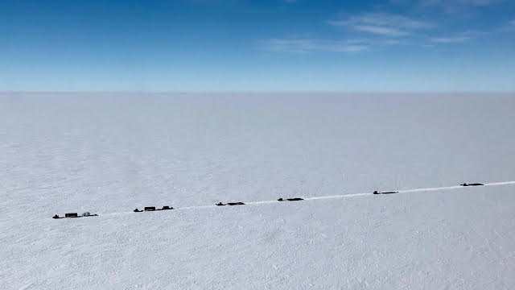
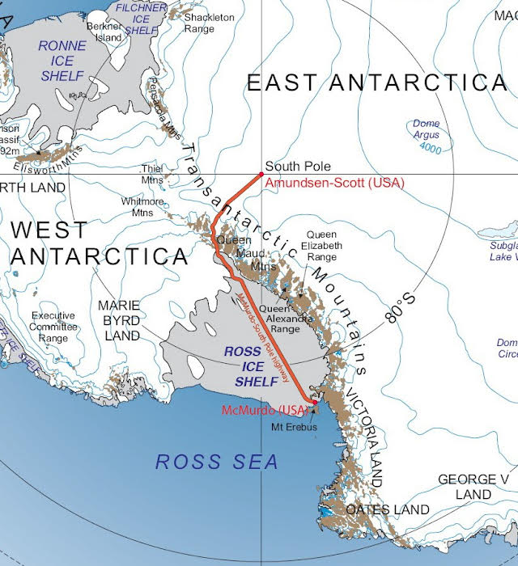
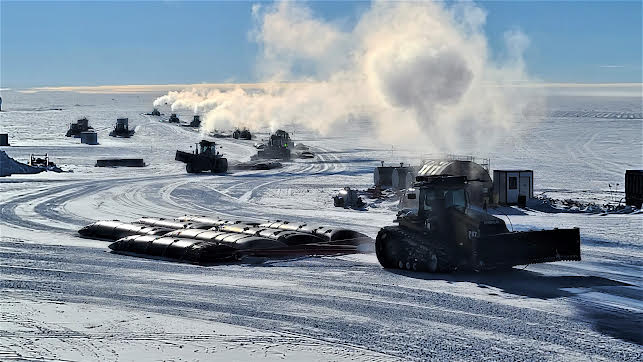
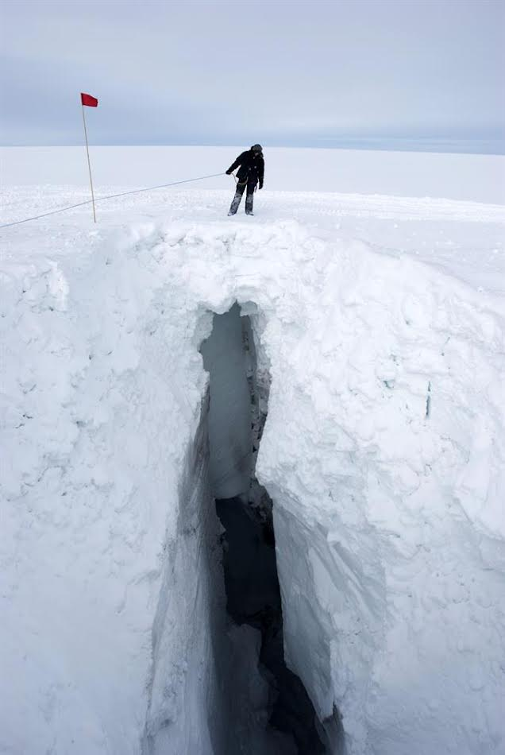
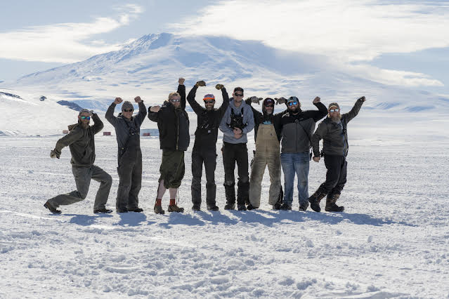
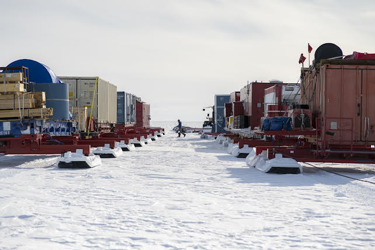

Longren Antarctic Newsletter #05 - 23.01.2023 ------------------------------ Dearest people, In my eyes, SPoT is one of the coolest operations run in Antarctica, if not anywhere. It's a simple idea: flying is expensive, so why not drive? From and to where, you might ask. Well, from the edge of the Antarctic continent right to the center of it: McMurdo Station to the South Pole. I want to highlight Antarctica's highway, the South Pole overland Traverse (SPoT).  An aerial view of the traverse (J. MacGregor). Measuring 1,000 miles (1,600 km) in length over compacted snow, the flagged route has existed since 2007. Originating from the north side of the Ross Ice Shelf at McMurdo Station, a majority of the highway runs along the ice shelf until it crosses the Transantarctic Mountains to arrive at the Amundsen-Scott South Pole Station.  The SPoT route from McMurdo to Pole (Wikipedia). The main reason for SPoT to exist is to deliver fuel to the South Pole. Previously, all fuel to Pole was delivered through LC-130 tanker flights, where the planes carry excess fuel that is then offloaded upon arrival, leaving only just enough onboard for them to get back to McMurdo. Each austral summer, SPoT delivers 300,000 gallons (1,100,000 liters) of fuel to the Pole. On the return trip to McMurdo, the traverse brings back Pole's waste to then be sent to California, USA for processing. The outbound traverse takes approximately three weeks due to the slow speed in carrying soft-sided fuel bladders, a snail's pace of seven miles (eleven km) per hour for 12 hours a day. On the return journey, a quicker pace is made without fuel.  The caravan arriving to the Pole (S. Allinger). While the route is well regulated and quite safe, hazards still remain. Inherent to the continent is its ever changing landscape. As the snow and ice shift over time, crevasses pop up. Early in the austral summer, these cracks in the route are discovered, exposed, filled, and compacted to ensure safe passage for the rest of the season. Dangers also exist in regards to the environment. On the positive side, SPoT is more efficient than tanker flights, reducing both emissions and costs. However, the traverse brings with it an increased risk of hurting the current environment. Just this year, one of the teams had a fuel bladder break while enroute to the Pole, spilling a great amount of fuel onto the ice. While they cleaned up what they could on their way back to McMurdo, the existence of the highway does impact the purity of this beautiful white continent (though, the same could be said about any human presence at all).  A crevasse on the highway (T. Thomas). While I have not been on the traverse, nor have I been to the South Pole (both of which I hope to reach one day), I have met a few people who have. One such person, a fellow Luke, recently left on the 3rd and final traverse to Pole of the season. He and I have largely interacted by playing a single game of cribbage, though he did tell me this (to paraphrase): while SPoT is a unique and enjoyable experience, it's really just a lot of slowly driving straight.  This season's SPoT 3 crew, with their Luke pictured far left (S. Allinger). What I find to be so cool about SPoT is how special it is. While it's not the only traverse across Antarctica, and there are other very cool research and operations that are happening here, SPoT simply connects the two major sites of the United States Antarctic Program: McMurdo Station and Amundsen-Scott South Pole Station. Without these stations, much of the research performed across Antarctica would not be feasible. The South Pole Traverse is a physical bridge that connects these two important and special places.  Sleds loaded with traverse cargo (S. Allinger). Thanks for reading. Until next time, stay well. Kindest regards, Luke ------------------------------ ------------------------------ If you think that someone would be interested in learning about the Antarctic and what working there is like, please do forward this letter to them. If you would like to be removed from this newsletter, just email me and I can do so. Lastly, if you have any questions about life, work, or anything else regarding Antarctica, send me an email and I can try to answer your question in the next letter. Thank you! |